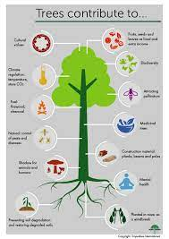
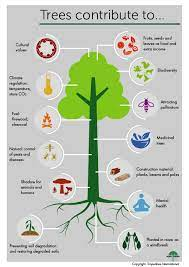

Importance of Trees
Oxygen Production:Trees are vital for the production of oxygen through a process called photosynthesis. They absorb carbon dioxide and release oxygen, providing the air we breathe.
.jpeg)
.jpeg)
.jpeg)
.jpeg)
.jpeg)
.jpeg)
Oxygen Production:Trees are vital for the production of oxygen through a process called photosynthesis. They absorb carbon dioxide and release oxygen, providing the air we breathe.

The lifecycle of a tree is a complex and fascinating process that involves distinct stages of growth, reproduction, and eventual renewal. Here's an elaboration on the general lifecycle of a tree:
1. **Seed Germination:**
- The lifecycle begins with the germination of a seed. Seeds are typically dispersed through various mechanisms, such as wind, water, animals, or birds. Once a seed lands in a suitable environment with the right conditions, it begins to germinate.
2. **Seedling Stage:**
- As the seed germinates, it gives rise to a seedling. The seedling is characterized by the emergence of the first leaves, called cotyledons, and the development of a young root system. During this stage, the tree relies on nutrients stored in the seed for initial growth.
3. **Vegetative Growth:**
- The seedling enters a phase of vegetative growth, during which it establishes a more extensive root system and develops branches and leaves. This stage is crucial for the tree's ability to capture sunlight and convert it into energy through photosynthesis.
4. **Maturity and Reproductive Stage:**
- After several years of growth, the tree reaches maturity. The exact time to maturity varies widely among different tree species. Once mature, the tree has the capacity to produce flowers and fruits. This marks the beginning of the reproductive stage.
5. **Flowering and Pollination:**
- In the reproductive stage, trees produce flowers that contain reproductive organs. Pollination occurs when pollen is transferred from the male reproductive organs (stamens) to the female reproductive organs (pistils) either by wind, insects, birds, or other animals.
6. **Fruit Development:**
- Successful pollination leads to the development of fruits, which contain seeds. The fruit serves as a protective structure for the seeds and is often adapted to aid in seed dispersal. Fruits may be fleshy, dry, or have specialized structures for dispersal by wind, water, or animals.
7. **Seed Dispersal:**
- Once the seeds are mature, they are dispersed to new locations. This can happen through various means, including wind, water, animal ingestion, or attachment to fur or feathers. Seed dispersal is crucial for the establishment of new trees and the survival of the species.
8. **Germination and New Growth:**
- When a seed reaches a suitable environment, it undergoes germination, starting a new cycle. The seedling emerges from the seed, and the process repeats as the new tree begins its own lifecycle.
9. **Aging and Senescence:**
- As a tree ages, it undergoes senescence, a natural aging process. The rate of growth slows down, and the tree may experience a decline in vitality. Eventually, old or damaged parts of the tree may die.
10. **Renewal:**
- While some trees are long-lived, the lifecycle of an individual tree ends with death. However, the species continues its existence through the constant renewal of generations. New trees grow from seeds, ensuring the perpetuation of the species.
Understanding the tree lifecycle is crucial for conservation efforts and sustainable forest management. It highlights the interconnectedness of trees with their environment and the vital role they play in the broader ecosystem.
Trees play a vital and multifaceted role in the environment, contributing to the health and well-being of the planet and its inhabitants. Here are some key roles that trees play:
1. **Oxygen Production:**
- Through the process of photosynthesis, trees absorb carbon dioxide and release oxygen. They are a primary source of the oxygen we breathe, making them essential for human and animal life.
2. **Carbon Sequestration:**
- Trees act as carbon sinks, absorbing carbon dioxide from the atmosphere and storing carbon in their biomass. This helps mitigate the impacts of climate change by reducing the concentration of greenhouse gases.
3. **Biodiversity Support:**
- Trees provide habitats for a wide variety of plant and animal species. Forest ecosystems are rich in biodiversity, and trees contribute to the overall health and resilience of ecosystems.
4. **Erosion Prevention:**
- The roots of trees help bind the soil, preventing erosion by stabilizing the ground. This is particularly important in areas prone to landslides and soil degradation.
5. **Water Regulation:**
- Trees play a role in regulating the water cycle. They absorb water through their roots, release it through transpiration, and help maintain a balanced water table. Forests are crucial for watershed management.
6. **Climate Regulation:**
- Forests and trees contribute to local and global climate regulation. They influence temperature, humidity, and precipitation patterns, creating a more stable and favorable environment for life.
7. **Air and Water Purification:**
- Trees filter pollutants from the air and water. They help improve air quality by trapping particulate matter and absorbing pollutants. Tree canopies also provide shade, reducing the urban heat island effect.
8. **Resource for Humans:**
- Trees are a valuable resource for humans. They provide timber for construction, wood for fuel, and a wide range of other products, including fruits, nuts, resins, and medicinal compounds.
9. **Aesthetic and Recreational Value:**
- Trees contribute to the beauty of landscapes and urban environments. Green spaces with trees offer recreational opportunities, contribute to mental well-being, and create aesthetically pleasing surroundings.
10. **Wildlife Habitat:**
- Forests and individual trees provide essential habitats for wildlife. They offer food, shelter, and breeding grounds for various species, contributing to biodiversity.
11. **Cultural and Spiritual Significance:**
- Trees hold cultural and spiritual significance for many communities worldwide. They are often symbols of life, growth, and interconnectedness, playing a role in various cultural practices and traditions.
12. **Economic Importance:**
- The forestry industry is economically significant, providing employment and raw materials for various industries. Sustainable forest management practices are essential to maintain this economic resource.
Understanding and promoting the importance of trees is crucial for environmental conservation, sustainable development, and the well-being of ecosystems and communities.